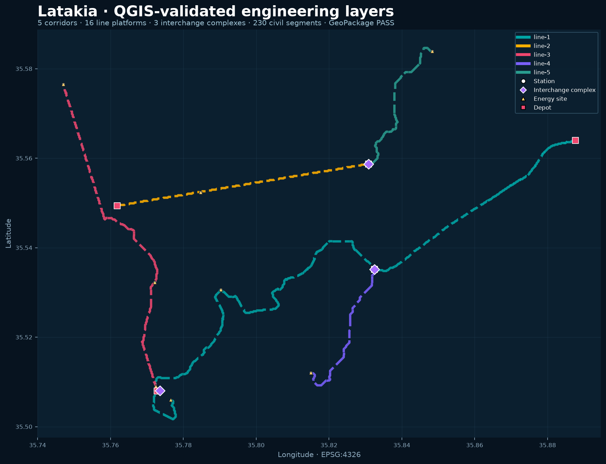
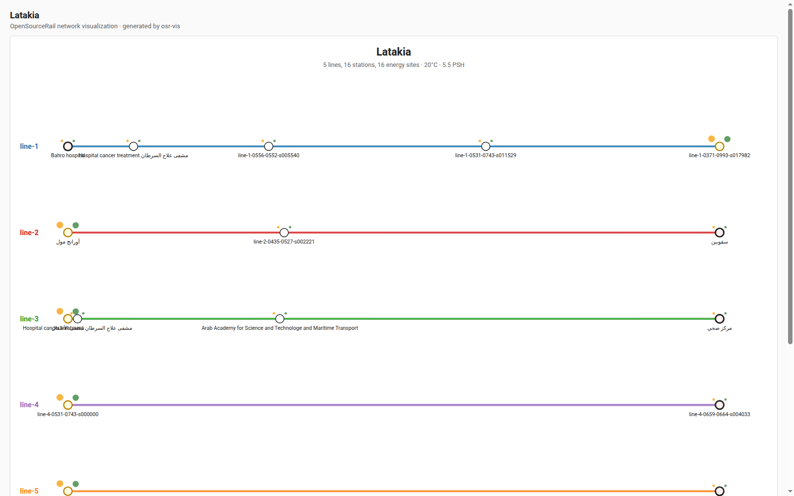
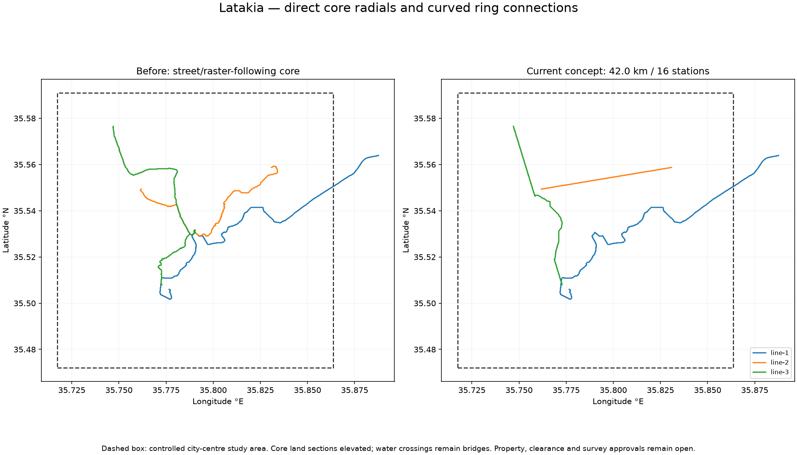
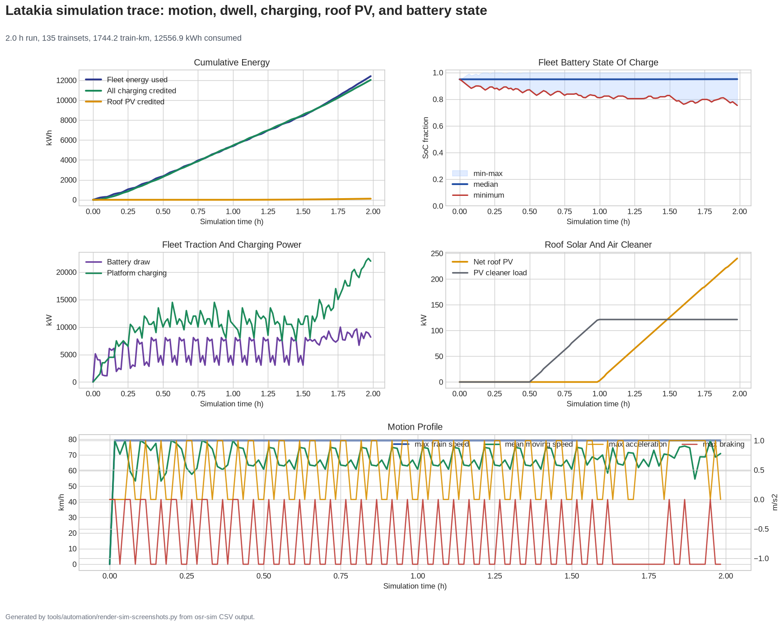

Provisional design and simulation inventory. Engineering, manufacturing and physical release remain open. No complete railway or manufacturing release is claimed.
0 registered parts; 0 software allocations; 12 system domains. 0 accepted complete systems.
Configuration: cities/catalogue/west-asia/Syria/Latakia/design.toml. Exact hashes and full coverage.
Matching hashes establish source consistency only. Stale receipts require regeneration; unbound evidence requires an applicable receipt. City-specific ground, duty, supplier and physical acceptance gates remain open.
| System | Evidence state | Actual outputs | Next acceptance gate |
|---|---|---|---|
| Requirements, alignment and site | stale-evidence | cities/catalogue/west-asia/Syria/Latakia/engineering/access/README.md cities/catalogue/west-asia/Syria/Latakia/engineering/access/summary.json cities/catalogue/west-asia/Syria/Latakia/engineering/alignment/README.md cities/catalogue/west-asia/Syria/Latakia/engineering/alignment/core-alignment-comparison.png cities/catalogue/west-asia/Syria/Latakia/engineering/clearance/README.md cities/catalogue/west-asia/Syria/Latakia/engineering/clearance/summary.json | Adopt survey, ownership, utilities, ground, flood, wind and seismic investigations; open maps are screening inputs. |
| Foundations, supports, decks and track | missing-evidence | Complete load combinations, resistance, connections, construction stages and site-specific ground verification. | |
| Stations, access and services | stale-evidence | cities/catalogue/west-asia/Syria/Latakia/engineering/station-cluster-summary.json cities/catalogue/west-asia/Syria/Latakia/engineering/station-product-map.json | Complete placed structures, egress, accessibility, fire, services and connection acceptance. |
| Rolling stock and mechanical assemblies | missing-evidence | Close complete train geometry, bogies, brakes, couplers, doors, fatigue, crash applicability and manufacturing drawings. | |
| Traction, battery and electrical | stale-evidence | cities/catalogue/west-asia/Syria/Latakia/engineering/energy/summary.json | Freeze exact chemistry, supplier ratings, protection, thermal/fire design, harnesses and measured duty. |
| Cooling, HVAC, drainage and fluids | missing-evidence | Qualify whole-car HVAC, cooling and fluids against local environment and measured supplier maps. | |
| Software, signalling, control and communications | missing-evidence | Allocate requirements and interfaces to deployed versions; execute fault, integration, SIL/HIL and applicable independent assurance. | |
| Factories, tooling and local manufacture | provisional-evidence | cities/catalogue/west-asia/Syria/Latakia/engineering/factory/README.md cities/catalogue/west-asia/Syria/Latakia/engineering/factory/summary.json | Freeze British manufacture case by case, supplier configurations, quotations, process capability, cranes, tooling and factory acceptance. |
| Service, stabling and maintenance | stale-evidence | cities/catalogue/west-asia/Syria/Latakia/engineering/depot-scope/README.md cities/catalogue/west-asia/Syria/Latakia/engineering/depot-scope/summary.json cities/catalogue/west-asia/Syria/Latakia/engineering/stabling/README.md cities/catalogue/west-asia/Syria/Latakia/engineering/stabling/summary.json cities/catalogue/west-asia/Syria/Latakia/engineering/sumo/summary.json | Accept timetable, fleet duty, charging, depot capacity, rescue, maintenance and degraded operation. |
| Coupled train, track, structures and energy | provisional-evidence | cities/catalogue/west-asia/Syria/Latakia/engineering/project-twin/summary.json | Run exact-revision coupled dynamics, loads, power, heat and protocol tests with convergence and adverse controls. |
| Delivery programme and finance | stale-evidence | cities/catalogue/west-asia/Syria/Latakia/engineering/delivery/README.md cities/catalogue/west-asia/Syria/Latakia/engineering/delivery/summary.json cities/catalogue/west-asia/Syria/Latakia/engineering/factory/README.md cities/catalogue/west-asia/Syria/Latakia/engineering/factory/summary.json cities/catalogue/west-asia/Syria/Latakia/engineering/finance/summary.json | Obtain funding commitments, contracts, current quotations, approved calendar, land and programme acceptance. |
| Manufacturing QA and physical acceptance | missing-evidence | Execute serial/revision-specific inspections, calibrated tests, authenticated evidence and independent engineering release. |
Presence does not establish motion, collision or physical validation.




| ID | Component | State | Required acceptance |
|---|